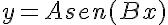
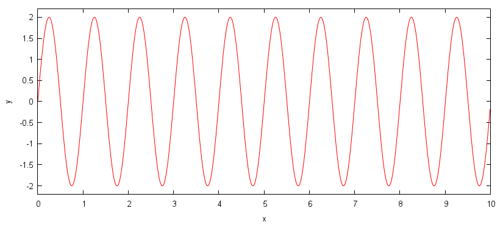
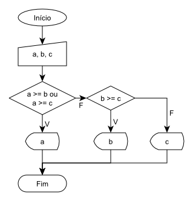
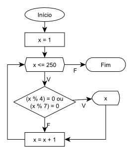

| AV. | Solicitado em | Data de Entrega | Nome | Descrição |
| 2 | 20.04.2011 | 11.05.2011 | E2.1:Primos | Fluxograma e pseudocódigo para validar números primos.
Número primo é aquele é o resultado da divisão é inteira apenas por ele mesmo ou 1. O usuário deve entrar com um número e o algoritmo deve dizer se é primo ou não.
|
| 20.04.2011 | 11.05.2011 | E2.2:Baskara | Fluxograma e pseudocódigo para calcular a equação de Báskara.
Com a equação de Báskara é possível calcular a raiz de uma equação de 2o grau. O usuário deve entrar com os valores de A, B e C.
|
|
| 20.04.2011 | 11.05.2011 | E2.3:Tabuada | Fluxograma, pseudocódigo e programa das tabuadas do 2 ao 9.
O usuário não precisa entrar com valor algum.
|
|
| 20.04.2011 | 11.05.2011 | E2.4:Fibonacci | Fluxograma, pseudocódigo e programa para calcular uma série de Fibonacci.
A série de Fibonacci é amplamente encontrada na Natureza (Série de Fibonacci). O usuário deve entrar com o número de iterações da série (n). O Código deve imprimir toda a seqüência.
|
|
| 20.04.2011 | 11.05.2011 | E2.5:CPF | Fluxograma, pseudocódigo e programa para validar um CPF.
O CPF brasileiro contém verificação para checar se o número é válido. Verifique na internet.
|
|
| 3 | 18.05.2011 | 15.06.2011 | E3:Lancamento (2.0 pts) |
Fazer um programa para ajudar nos cálculos do projeto integrador. Este programa deve ser receber todos os parâmetros (não fixos, aceleração da gravidade é fixo, por exemplo) necessários para modelar a trajetória do projétil a ser lançado no projeto integrador, exceto um parâmetro, o qual deve ser calculado pelo programa. Os parâmetros são, por exemplo, ângulo de lançamento, velocidade inicial, distância de deslocamento e outros que são usados em sua modelagem matemática.
Este trabalho pode ser feito pelo mesmo grupo e número de componentes do projeto integrador.
Exemplo: projetar um programa que calcule a hipotenusa de um triângulo. Para isto, deve-se entrar com o tamanho dos catetos, dado que r2=a2+b2, logo, r = (a2+b2)1/2. Note que x1/2 é igual a raiz quadrada de x. Segue abaixo o código exemplo e a saída:
Código em Linguagem C#include <stdio.h>
#include <math.h>
int main()
{
// declara as variaveis
float a, b, r;
// recebe os valores do usuario
printf("Digite os valores dos catetos:\n");
printf("a: ");
scanf("%f", &a);
printf("b: ");
scanf("%f", &b);
// calcula a hipotenusa r = raiz(a^2 + b^2)
r = sqrt(pow(a, 2) + pow(b, 2));
// exibe o valor da hipotenusa
printf("Valor da hipotenusa:\n");
printf("r: %f\n", r);
}
SaídaE:\>hipotenusa.exe Digite os valores dos catetos: a: 3 b: 4 Valor da hipotenusa: r: 5.000000 E:\> |
| 15.06.2011 | 18.06.2011 12h00 (GMT+03h00) |
P3:Funcao (6.0 pts) |
O trabalho deve calcular os valores da função abaixo dado alguns parâmetros de entrada. Os parâmetros de entrada são: A, B, x0, x1 e passo. O valor de y é dado por x, o qual é incrementado de acordo com o valor de passo dado pelo usuário.
 Este trabalho pode ser feito pelo mesmo grupo e número de componentes do projeto integrador. Exemplo da Saída EsperadaE:\>p3.exe
Calcula os valores de y = A.sen(Bx) para uma faixa de x
Entre com o valor de A: 2
Entre com o valor de B: 6.28
Entre com o valor de x0: 0
Entre com o valor de x1: 10
Entre com o passo: 0.01
Dados de saida:
x y
0.000000, 0.000000
0.010000, 0.125517
0.020000, 0.250540
0.030000, 0.374575
0.040000, 0.497133
0.050000, 0.617731
0.060000, 0.735894
0.070000, 0.851155
0.080000, 0.963061
.
.
.
9.980133, -0.311948
9.990133, -0.187349
E:\>
Se as colunas forem plotado em um editor de gráficos, podemos obter o seguinte gráfico |
1) É desejado um algoritmo que imprima em tela o maior número de uma coleção de três números dados: A, B e C. Construa o pseudocódigo e o código fonte em linguagem C.

Algoritmo: maior número de três
INÍCIO
VAR a, b, c;
ESCREVER "a: "
LER a
ESCREVER "b: "
LER b
ESCREVER "c: "
LER c
SE ( E (a >= b, a >= c) ) ENTÃO
INÍCIO
ESCREVER "o maior e: " + a
FIM
SENÃO SE (b >= c)
INÍCIO
ESCREVER "o maior e: " + b
FIM
SENÃO
INÍCIO
ESCREVER "o maior e: " + c
FIM
FIM
#include <stdio.h>
int main() {
int a, b, c;
printf("a: "); scanf("%i", &a);
printf("b: "); scanf("%i", &b);
printf("c: "); scanf("%i", &c);
if (a >= b && a >= c)
{
printf("o maior e: %i", a);
}
else if (b >= c)
{
printf("o maior e: %i", b);
}
else
{
printf("o maior e: %i", c);
}
}
2) É desejado um algoritmo que imprima em tela todos os múltiplos de 4 e 7 em uma série numérica de 1 até 250. Construa o fluxograma e o código fonte em linguagem C.

Algoritmo: múltiplos de 4 e 7 [1;250]
INÍCIO
PARA X DE 1 ATÉ 250 PASSO 1 FAÇA
INÍCIO
SE (OU( x%4 = 0, x%7 = 0)) ENTÃO
INÍCIO
ESCREVER x
FIM
FIM
FIM
#include <stdio.h>
int main()
{
for (int x = 1; x <= 250; x = x + 1)
{
if ((x % 4 == 0) || (x % 7 == 0))
{
printf("%i", x);
}
}
}
| Símbolo | Finalidade | Capacidade | Exemplo |
|---|---|---|---|
| int | valores inteiros |
16 bits (216) 32 bits (232) 64 bits (264) |
int x = 10; |
| float | valores com casas decimais | 3,4-38 a 3,4+38 | float pi = 3.1416; |
| char | caracteres | 1 char = 1 byte |
char enter = 13; // apenas um char char mensagem[] = "Ola mundo"; // uma sequência de characteres |
Mais informações sobre tipos de dados estão disponíveis em: http://pt.wikipedia.org/wiki/C_(linguagem_de_programa%C3%A7%C3%A3o)#Tipos_de_dados e http://www.cplusplus.com/doc/tutorial/variables/.
| Símbolo | Finalidade | Exemplo |
|---|---|---|
| = | atribui um valor a uma variável |
float x = 2.3; char msg[] = "Ola mundo"; |
| + | soma dois valores ou variáveis |
float x = 10 + 2.3; float z = x + y; |
| - | subtrai dois valores ou variáveis |
float x = 10 - 2.3; float z = x - y; |
| / | divide dois valores ou variáveis |
float x = 10 / 2.3; float z = x / y; |
| * | multiplica dois valores ou variáveis |
float x = 10 * 2.3; float z = x * y * 2.5; |
| % | módulo de uma divisão |
int x = 10 % 3; // resultado é 1 float z = x % y; |
| Símbolo | Finalidade | Exemplo |
|---|---|---|
| = = | compara dois valores e retorna verdadeiro se iguais |
7 == 5 // retorna falso 5 == 5 // retorna verdadeiro a == b // compara duas variáveis |
| ! = | compara dois valores e retorna verdadeiro se diferentes |
7 != 5 // retorna verdadeiro 5 != 5 // retorna falso a != b // compara duas variáveis |
| > | retorna verdadeiro se o primeiro for maior que o segundo |
7 > 5 // retorna verdadeiro 5 > 5 // retorna falso 5 > 7 // retorna falso a > b // compara duas variáveis |
| < | retorna verdadeiro se o primeiro for menor que o segundo |
7 < 5 // retorna falso 3 < 5 // retorna verdadeiro 5 < 5 // retorna falso a < b // compara duas variáveis |
| >= | retorna verdadeiro se o primeiro for maior ou igual ao segundo |
7 >= 5 // retorna verdadeiro 5 >= 5 // retorna verdadeiro 5 >= 7 // retorna falso a >= b // compara duas variáveis |
| <= | retorna verdadeiro se o primeiro for menor ou igual ao segundo |
7 < 5 // retorna falso 3 <= 5 // retorna verdadeiro 5 <= 5 // retorna verdadeiro a <= b // compara duas variáveis |
| Símbolo | Finalidade | Exemplo |
|---|---|---|
| ! | NOT: inverte o valor de uma variável ou expressão lógica |
!(7 == 5) // retorna verdadeiro !(5 == 5) // retorna falso !true // retorna falso !false // retorna verdadeiro !a // inverte uma variável lógica |
| && | AND: retorna verdadeiro apenas quando duas variáveis forem verdadeiras |
(5 == 5) && (6 == 6) // retorna verdadeiro, pois (verdadeiro && verdadeiro) (7 == 5) && (6 == 6) // retorna falso, pois (falso && verdadeiro) (5 == 5) && (7 == 6) // retorna falso, pois (verdadeiro && falso) (7 == 5) && (7 == 6) // retorna falso, pois (falso && falso) (a == b) && !b // aplicado a variáveis |
| || | OR: retorna verdadeiro se ao menos um das duas variáveis forem verdadeiras |
(5 == 5) || (6 == 6) // retorna verdadeiro, pois (verdadeiro && verdadeiro) (7 == 5) || (6 == 6) // retorna verdadeiro, pois (falso && verdadeiro) (5 == 5) || (7 == 6) // retorna verdadeiro, pois (verdadeiro && falso) (7 == 5) || (7 == 6) // retorna falso, pois (falso && falso) (a == b) || !b // aplicado a variáveis |
Mais informações sobre operadores estão disponíveis em: http://www.cplusplus.com/doc/tutorial/operators/.
| Síntaxe | Finalidade | Exemplo |
|---|---|---|
if ( condição )
{
bloco: se verdadeira
}
else
{
bloco: senão
}
|
realização um desvio condicional |
// Verifica a magnitude de um numero
#include <stdio.h>
int main ()
{
int n = 0;
printf("Numero a ser verificado > ");
scanf("%i", &n);
if ( n < 0 )
{
printf("o numero %i e negativo\n", n);
}
else if ( n > 0 )
{
printf("o numero %i e positivo\n", n);
}
else
{
printf("o numero e zero\n");
}
}
|
| Síntaxe | Finalidade | Exemplo |
|---|---|---|
while ( condição )
{
bloco
}
|
repete um bloco enquanto uma condição for verdadeira |
// faz uma contagem regressiva
#include <stdio.h>
int main ()
{
int n = 0;
printf("Comecar no numero > ");
scanf("%i", &n);
while ( n > 0 ) {
printf("%i, ", n);
n = n - 1;
}
printf("Lancado!\n");
}
|
do {
bloco
} while ( condição );
|
repete um bloco enquanto uma condição for verdadeira |
// Exemplo de um terminal
#include <stdio.h>
int main ()
{
int n = 0;
do {
printf("Digite um numero [0 termina]: ");
scanf("%i", &n);
printf("Voce digitou: %i\n", n);
} while (n != 0);
printf("Fim!\n");
}
|
for ( inicial; condição; incremento )
{
bloco
}
|
repete um bloco enquanto uma condição for verdadeira |
// Programa de contagem regressiva
#include <stdio.h>
int main()
{
for (int n = 10; n > 0; n = n - 1)
{
printf("%i, ", n);
}
printf("Lancado!\n");
}
|
Mais informações sobre controle de estrutura estão disponíveis em: http://www.cplusplus.com/doc/tutorial/control/, os exemplos foram retirados deste link também.
#include <stdio.h>
int main()
{
printf("Olá mundo");
}
#include <stdio.h>
int main()
{
int numero = 0;
printf("Define se e impar ou par\n");
printf("Entre com um numero: ");
// espera um numero ser digitado
scanf("%d", &numero);
if ((numero % 2) == 0)
{
printf("Par!");
} else {
printf("Impar!");
}
}
#include <stdio.h>
// Calcula a tabuada de um numero dado
int main()
{
int numero = 0;
printf("Fazer a tabuada do: ");
// espera um numero ser digitado
scanf("%d", &numero);
// repete o bloco ate que x seja menor
// ou igual a 10
int x;
for (x = 0; x <= 10; x = x + 1)
{
// calcula x * o numero de entrada
int y = x * numero;
printf("%i x %i = %i \n", numero, x, y);
}
}
Sugeridas pelo programa:
Minhas sugestões: